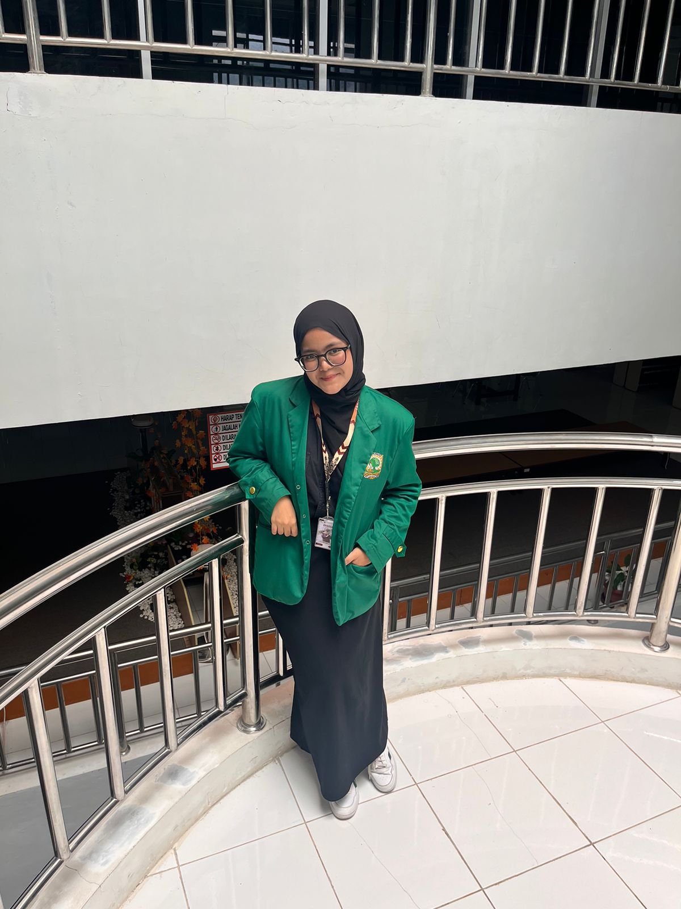

Hi! I’m Putri Balqis Afradinata, an Informatics student with a strong interest in web development and interface design. I enjoy creating clean, modern, and user-focused websites using HTML, CSS, and Bootstrap. I’m currently building my portfolio while strengthening my programming fundamentals and improving my design skills. My goal is to combine creativity and functionality in every project I work on.